Los Cuentos educan, los Cuentos Sanan, los Cuentos son una manifestación pura de amor💖.
☆
Con ese mensaje anclado en nuestro interior finalizamos la primera Formación de CuentaCuentos con Yoga, donde la filosofía yóguica se hizo presente para comprender la multiplicidad de los relatos.
☆
Gracias a cada una de las valientes compañeras que le dieron vida a este encuentro cuentero con Yoga 🙏.
☆
Y gracias a @peggysue.s.s y @javiera.del.real que hicieron realidad este viaje tan mágico 🥰🧘♂🧘♀💕📚
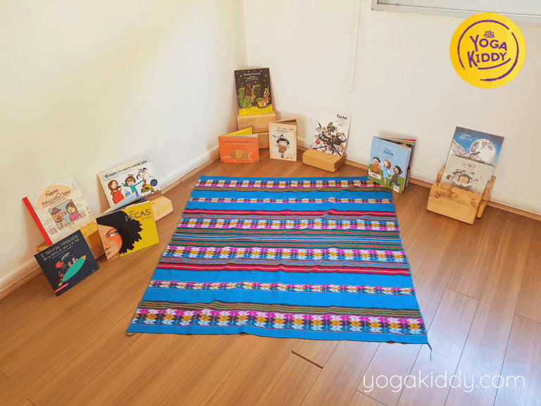
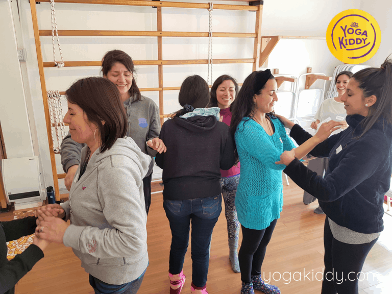
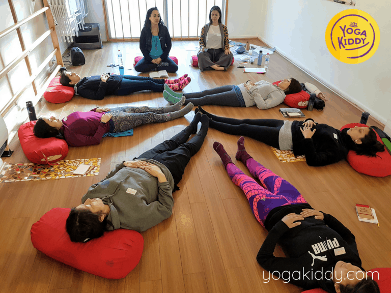
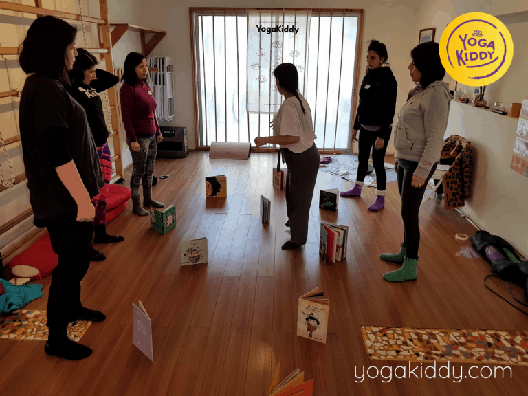
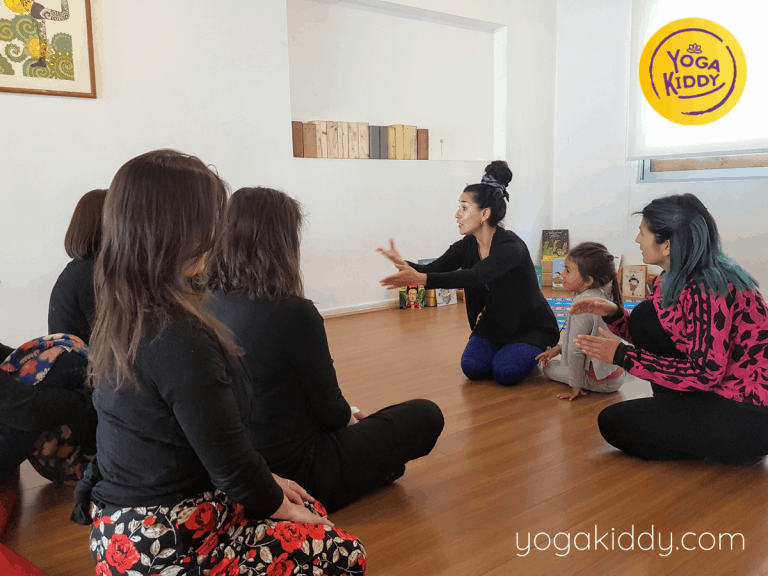
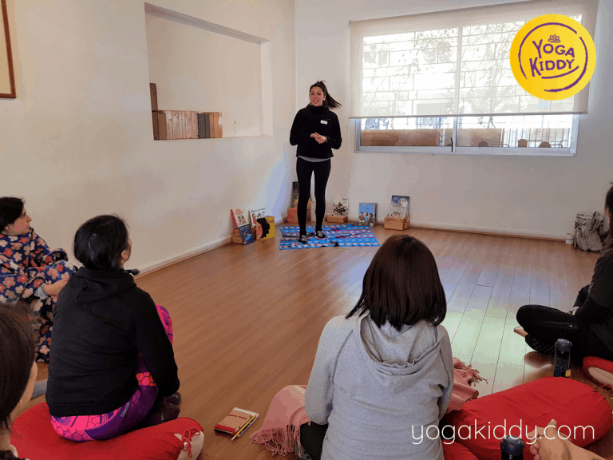
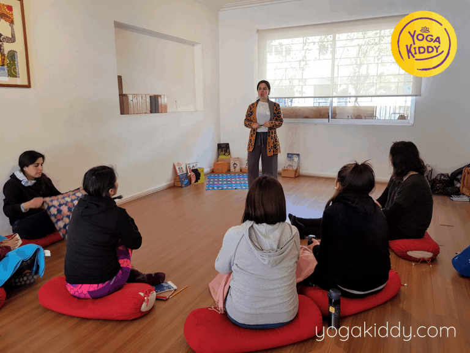
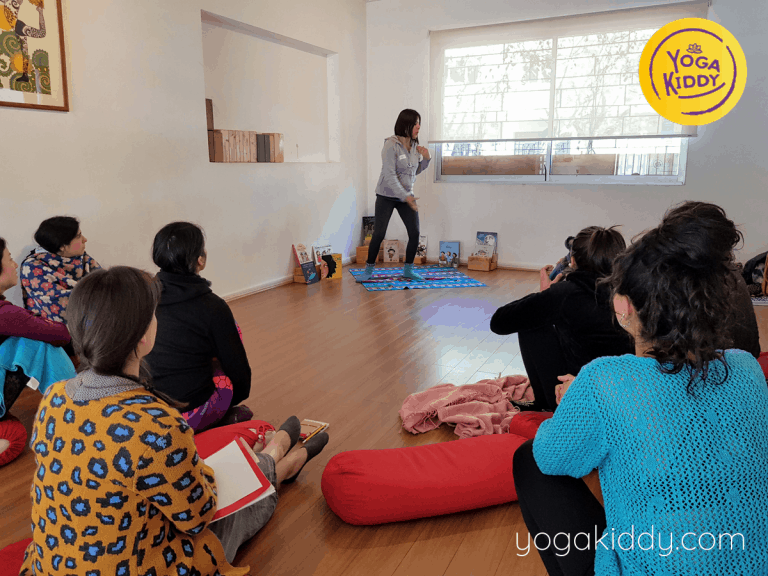
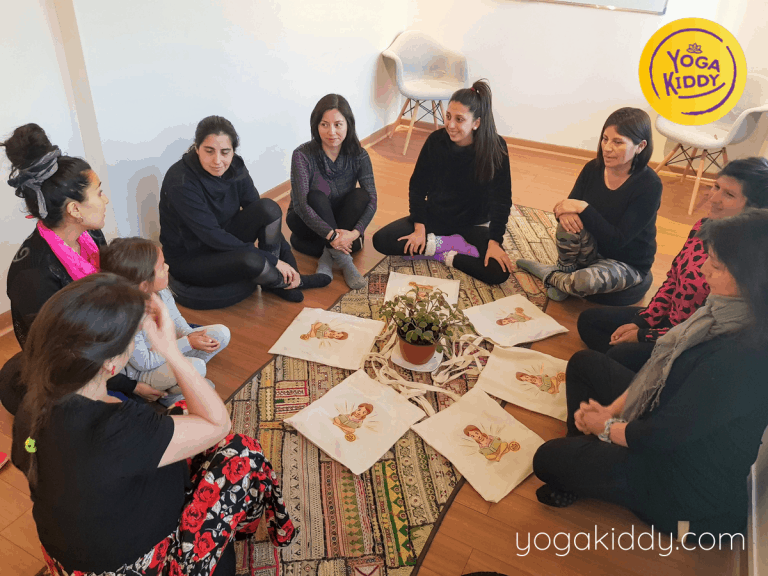
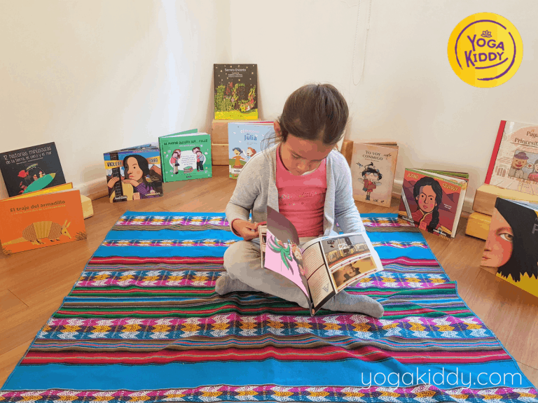
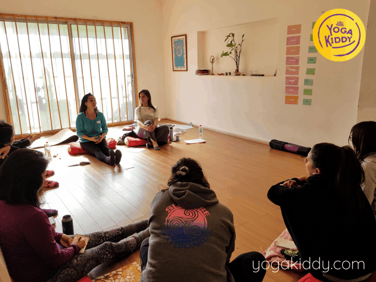
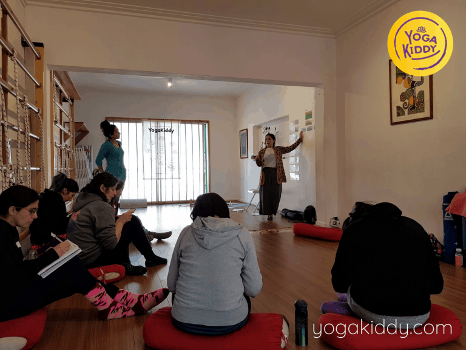
Hola soy Loreto Durand, participe del curso Yoga y Cuentacuentos. La verdad que es maravilloso! Hago una invitación porque es una alegría para el alma, es una herramienta para alegrar el mundo y llenarlo de magia. Cualquier idea que ustedes se hagan no va a ser nada comparado con lo que viven acá, de verdad se los recomiendo al mil de verdad son lo mejor que hay. Espero que las salas estén llenas de aquí a la eternidad, asi que muchas gracias YogaKiddy!